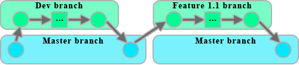

How to Create Branches

Git repositories use branches to isolate work when needed. It is a common practice when working on a project or with others to create a
branch to keep your changes in until they are ready. This way you can work in other branch(es) while the 'master' branch stays stable. When your branch is
ready, you merge it back into master.
Branching means you diverge from the main line of development and continue to do work without messing with that main line. In many VCS tools, this is a
somewhat expensive process, often requiring you to create a new copy of your source code directory which can take a long time and excessive amounts of disk
space for large projects.
Brian@HOST /p/web/ (dev)
$ git branch
* dev
master
git branch - tells you where you are in the branch tree. The * and green colored name indicates which branch you're in. Plus, the
prompt tells you where you are as well.
git branch <branch> - creates a new branch called <branch>.
git checkout <branch> - switches to <branch> branch.
git checkout master - switches to master branch. Technically, this is the same command as the preceding one. Every repository
starts out with a branch called master. If you try to create another branch called master, you will get an error message stating that that branch already
exists.
git checkout -b <branch> - create and switch into the new branch using one command.
git branch -d <branch> - removes a branch called <branch>.
You cannot delete a branch that you're in. You must move out (cd) of that directory and then delete the target branch.
As mentioned before, never work in the master branch. If anything, the master branch is your published or "final" version of your code. You should initialize
your files on the master branch and then create and work in a separate development branch.
For a great visualization on how branches work in a project, see this GitHub Guide
guides.github.com/overviews/flow. and Atlassian's wonderful documents on Git
branching methodologies called
Comparing Workflows and
Git Workflows.